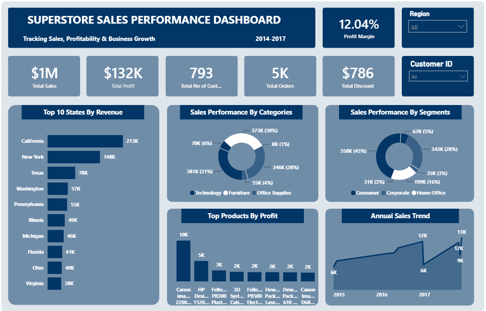

DATA ANALYTICS CASE STUDY
An interactive Power BI dashboard designed to analyze sales performance, profitability, regional trends, customer segments, product categories, and overall business performance.
PROJECT OVERVIEW
This project focuses on transforming Superstore sales data into an interactive business intelligence dashboard that makes sales and profitability trends easier to understand.
The analysis explores performance across different regions, product categories, customer segments, and time periods to identify patterns that can support better business decisions.
Power BI was used to transform the dataset into an interactive dashboard with KPIs, charts, filters, and geographic analysis.
Sales performance, profitability, regional performance, customer segments, and product categories.
A visual and interactive approach designed to help users quickly identify important business performance patterns.
BUSINESS QUESTIONS
How is overall sales performance changing across different periods?
Which regions and geographic areas contribute most to business performance?
How do different customer segments contribute to sales and profitability?
Which categories and products contribute most to sales and profit?
ANALYTICAL PROCESS
Reviewed and prepared the Superstore dataset to ensure the relevant fields were suitable for analysis and visualization.
Examined sales, profit, customer segments, product categories, regions, and time-based performance.
Developed key performance indicators to provide a concise view of important business metrics.
Built an interactive Power BI dashboard using visual analysis, geographic mapping, filters, and performance indicators.
POWER BI DASHBOARD

Interactive Power BI dashboard providing a visual overview of Superstore sales, profitability, regional performance, and customer and product trends.
KEY INSIGHTS
Regional analysis makes it possible to identify geographic differences in sales performance and understand where business activity is concentrated.
Comparing product categories provides visibility into which areas contribute to sales and how their performance differs across the business.
Segment-level analysis helps identify differences in purchasing activity and contribution to overall business performance.
Looking beyond revenue and including profit provides a more complete view of business performance and helps distinguish sales volume from financial contribution.
BUSINESS RECOMMENDATIONS
Track regional sales and profitability regularly to identify areas of strong performance and opportunities for improvement.
Use product-level profitability analysis to support decisions around product strategy and resource allocation.
Monitor segment performance to better understand customer contribution and identify opportunities for targeted strategies.
Evaluate revenue alongside profitability to ensure business growth is supported by healthy financial performance.
CONCLUSION
This project demonstrates how Power BI can transform raw sales data into an interactive analytical tool that makes business performance easier to monitor and understand.
By combining KPIs, visual analysis, geographic insights, and interactive filtering, the dashboard provides a practical framework for exploring sales, profitability, customers, products, and regional performance.
EXPLORE THE PROJECT